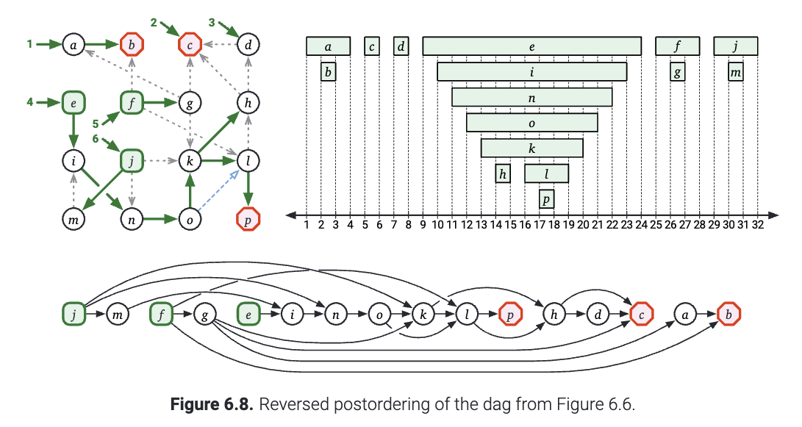
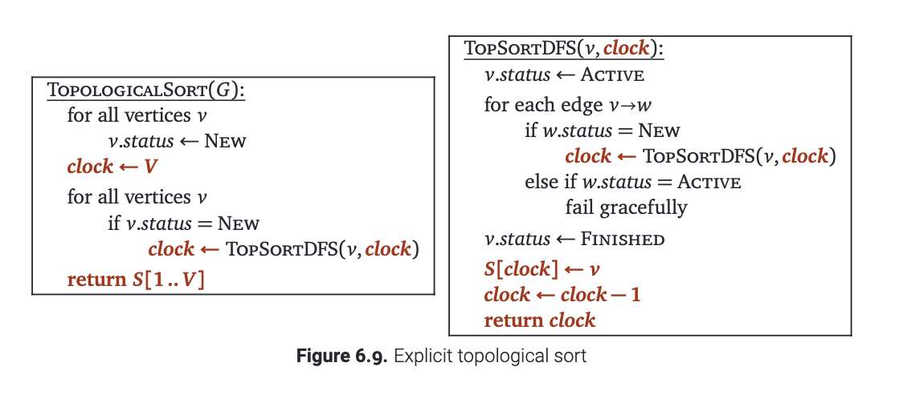

拓扑排序
一个有向图的拓扑(topological)排序是一个对于顶点的全序关系 \(\prec\) , 使得对于每个边 \(u\to v\) , 都有 \(u \prec v\) . 稍微不那么正式地说, 拓扑排序把顶点排成一行, 并且满足所有的边都从左边指向右边. 显然, 如果图有环的话, 拓扑排序在上面根本无法实现! 毕竟, 环的最右边的节点一定会有一条指向左侧的边!
换一个角度: 考虑任何一个图的后序遍历. 在早些时候, 我们已经知道了如果一个 \(u\to v\) 的边, 都有 \(u.post<v.post\) , 那么 \(G\) 包含一个从 \(v\) 到 \(u\) 的有向边. 换句话说, 如果 \(G\) 是无环的, 那么对于每条边, 都有 \(u.post>v.post\) . 由此可见, 每个有向无环图 \(G\) 都可以被拓扑排序. 也即是, \(G\) 的任何后序遍历倒着看就是 \(G\) 的拓扑排序.

如果我们需要在单独的数据结构中进行拓扑排序, 我们可以在 \(O(V+E)\) 的时间内把后序遍历的序列以逆序将节点写入我们的答案数组. 就像下图展示的那样.

隐式拓扑排序
但是将拓扑顺序记录到单独的数据结构中有时候开销有点大. 在拓扑排序的大多数实际应用中, 得到最终的节点顺序并不是我们的目标. 我们实际上希望按照拓扑排序的顺序在图上做一些有序的计算. 对于这些应用, 我们根本就不需要记录原来拓扑排序的结果是什么!
如果我们想以逆拓扑顺序处理有向无环图, 只需在递归深度优先搜索结束时处理每个顶点需要计算什么就行了. 毕竟, 拓扑顺序与后序遍历的序列倒着读是一样的.
如果我们已经知道了输入的图是无环的, 那么我们可以这样简化这个算法: 我们直接标记这些节点而不是记录他们搜索的过程.
这只不过是一个标准的深度优先搜索算法, 把PostVisit改成了Process!
因为这个操作是有向无环图上的常见操作, 所以有时会把它成为"后序处理 dag ", 写成代码就是下面这个样子:

例如, 我们之前的显式拓扑排序算法可以写成下面这个样子:
如果我们要按正向拓扑顺序处理一个DAG, 我们可以将顶点的拓扑顺序记录到一个数组中, 然后运行一个简单的 for 循环倒着把那些节点处理一遍就行了. 另外一种方法是, 我们还可以把所有的边翻转过来: 比如原来如果有一个边 \(u\to v\) , 现在我们给一个边 \(v\to u\) . 对每一条边这样操作, 就得到了这个图的翻转(reversal), 用 \(rev(G)\) 表示. 对于一个带有环的图而言, 这样的操作会使图中所有的环就会和原来的方向相反. 但是对于DAG而言, 把它翻转还是得到一个DAG. 只不过每一个源点变成了一个汇点, 每一个汇点都变成了源点. 根据归纳法, 我们可以说明 \(rev(G)\) 的每个拓扑排序都是 \(G\) 拓扑排序的反转. (注: 图 \(G\) 的反转之后的后序遍历不一定等于 \(G\) 的后序的反转, 尽管两者都是 图 \(G\) 的拓扑排序, 但是可能顺序不同. ) 任意有向图的反转(如果用邻接表表示的话)可以在 \(O(V+E)\) 的时间内表示出来. 对于这个内容的证明, 我们留作课下练习.
碎碎念
(1) 证明 \(rev(G)\) 的每个拓扑排序都是 \(G\) 拓扑排序的反转.
直观的解答: 在拓扑排序之后，如果我们将所有节点存储在列表中，则所有箭头从任何边缘点朝同一方向流出。如果我们反转列表，所有箭头现在都指向相反的方向。由于所有箭头都指向相同的方向，因此它是有效的拓扑排序。另一种方法，首先翻转所有边，然后执行拓扑排序，显然会产生有效的拓扑排序.